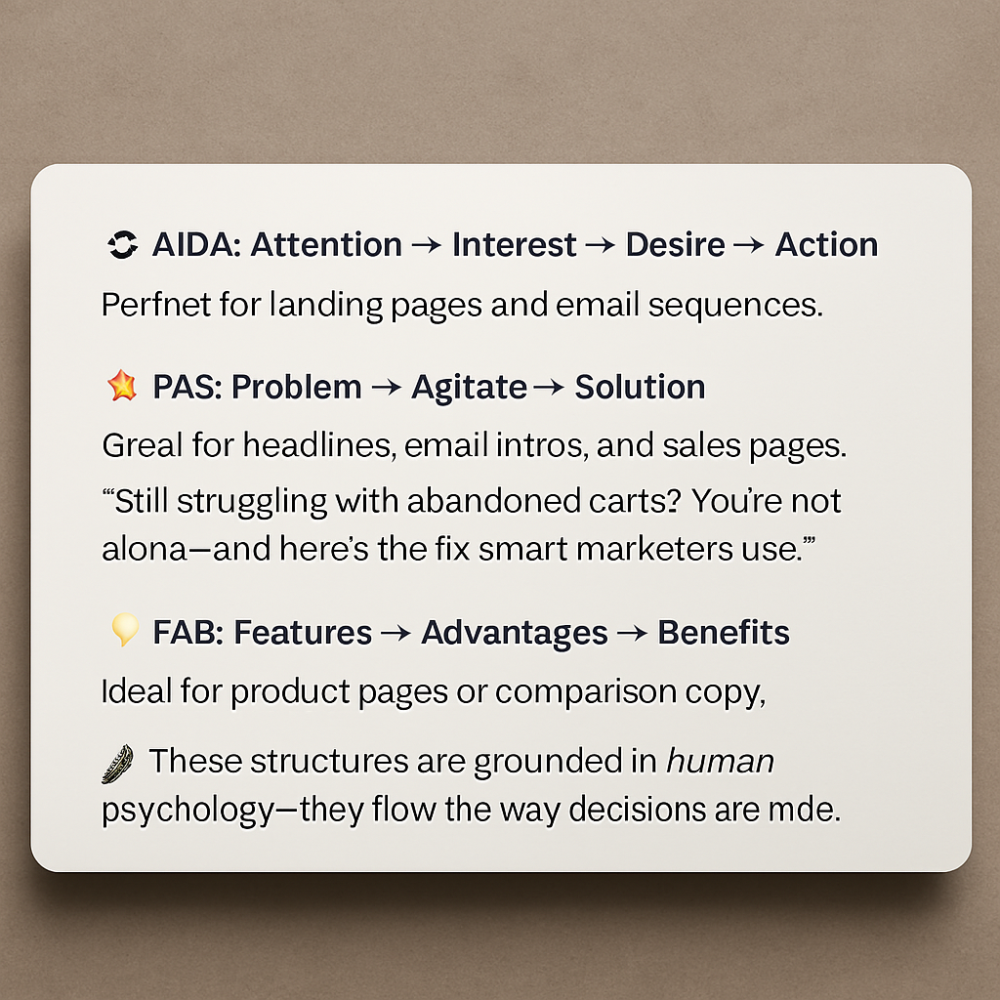
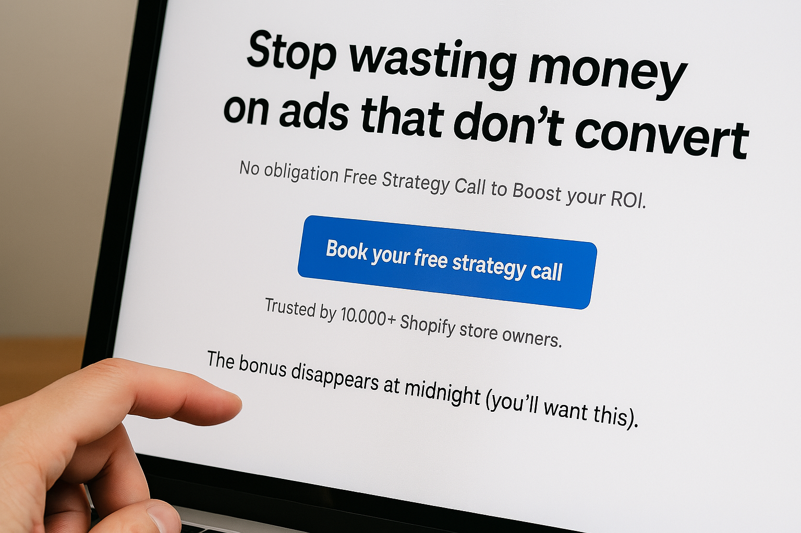

When I first started out in copywriting, I thought great copy meant clever wordplay and punchy headlines.
But after years of crafting sales pages, writing email campaigns, and studying what makes people click that “Buy Now” button, I discovered a deeper truth:
Great copy doesn’t just sound good—it feels right.It’s not about being loud. It’s about being psychologically aligned with the reader. At its core, copywriting is applied psychology—persuasion wrapped in empathy that turns casual scrollers into engaged readers, and readers into loyal customers. Let’s explore how and why it works.
Why Psychology is the Copywriter’s Secret Weapon 🧠
People don’t buy for purely logical reasons—they buy because something feels like the right move.
We justify with logic, but the decision starts with emotion.
That’s why the best copywriters don’t just describe features—they speak to fears, desires, values, and aspirations.
Whether it’s a product page or a social media ad, every piece of persuasive copy is crafted to answer the internal question:
“Is this for me—and can I trust it will solve my problem?”
When you understand the brain’s behavioral triggers, you can guide people toward that “Yes.”
Core Psychological Triggers That Drive Action 🧲
Here are the seven most powerful tools in your persuasion arsenal:
- ✅Reciprocity: Give value first—people are wired to want to give back.
- ✅Social Proof: Reviews, testimonials, and “used by 3,000+” boost confidence.
- ✅Scarcity & Urgency: “Only 3 left” or “Offer ends tonight” creates action-oriented tension.
- ✅Authority: Cite experts, awards, or big-name clients to transfer trust.
- ✅Consistency: Small “yes” now → bigger “yes” later (align with prior choices).
- ✅ Curiosity: Open loops/cliffhangers pull readers forward.
- ✅Loss Aversion: Avoiding loss is more motivating than seeking gain.
The Emotional Spectrum of High-Converting Copy ❤️
Emotion is the engine of persuasion.
Your copy should be tuned to evoke the right emotional state.
Here’s a snapshot of how emotional tones drive action:
- ✨ & Aspiration: “Discover the future you’ve been working toward.”
- 😨 Fear & Insecurity: “Are you making this costly mistake without realizing it?”
- 💪 Empowerment: “Take control of your finances, once and for all.”
- 🤝 Belonging: “Join 20,000+ creators building something incredible.”
🧠 When you create emotional resonance, you remove hesitation and build momentum.
Time-Tested Frameworks That Make Copy Flow Naturally 🧩

🔁 AIDA: Attention → Interest → Desire → Action
Perfect for landing pages and email sequences.
Example: “You’re wasting money on ads. Here’s how to fix it (and double your ROI). Start your free audit today.”
💥 PAS: Problem → Agitate → Solution
Great for headlines, email intros, and sales pages.
💡 FAB: Features → Advantages → Benefits
Ideal for product pages or comparison copy.
Example: “This ergonomic chair (feature) reduces back pain (advantage), so you can work longer without discomfort (benefit).
📌 These structures are grounded in human psychology.They flow the way decisions are made.
Voice, Tone & Reader Identity: Speak Their Language 🗣️
The best copy sounds like a conversation the reader is already having with themselves.
To get there:
- Understand your ideal customer’s pain points, desires, and language.
- Mirror their tone and terminology.
- Show empathy before selling.
💬 Don’t just say “Get 50% off.” Say: “Finally—comfort and support your body deserves. For half the price.”
Psychology in Action: Real Copy That Converts

A few examples that harness behavioral science brilliantly:
- 📨 Email Subject (Curiosity + Scarcity): “The bonus disappears at midnight (you’ll want this)”
- 🛒Landing Page CTA (Loss Aversion): “Stop wasting money on ads that don’t convert—book your free strategy call.”
- 📣 Ad Copy (Authority + Belonging): “Trusted by 10,000+ Shopify store owners. Now it’s your turn.”
Where to Use Psychological Copywriting Across the Funnel 🔄
| Channel | Best Psychology Tools |
|---|---|
| Curiosity, urgency, reciprocity | |
| Social Media | Belonging, storytelling, humor, scarcity |
| Landing Pages | AIDA, testimonials, risk reversal |
| Product Pages | FAB, loss aversion, clarity > cleverness |
| Ads | FOMO, bold visuals, emotional pain points |
| Blog Intros | PAS, narrative hooks, “what’s in it for me?” appeal |
The Ethics of Influence: Use Psychology Responsibly ⚖️
It’s one thing to use psychology—it’s another to abuse it.
- Don’t mislead with fake scarcity or fake testimonials.
- Don’t prey on insecurities just to make a sale.
- Do use influence to help people make informed, value-driven decisions.
If your product or service genuinely improves lives, persuasion is a service—not a trick.
Conclusion: Copywriting is Psychology With Purpose ✍️🧠💥
The best copy doesn’t just describe—it transforms.
It meets readers where they are, taps into how they think, and guides them toward a confident decision.
- Know your reader’s pain, desire, and objections.
- Speak with clarity, empathy, and precision.
- Build trust through psychology—not manipulation.
🚀 Your Next Steps
- ✅ Review your existing copy—are you using emotional drivers?
- ✅ Test new frameworks like AIDA or PAS in your next campaign.
- ✅ Use tone, voice, and behavior cues to deepen your connection with your audience.
Need psychologically smart, SEO-optimized, conversion-ready copy?
- ✍️ Landing page & ad copywriting rooted in behavioral psychology
- 🧠 Email campaigns that convert leads into loyal customers
- 📊 Messaging audits, copy rewrites, and conversion strategy